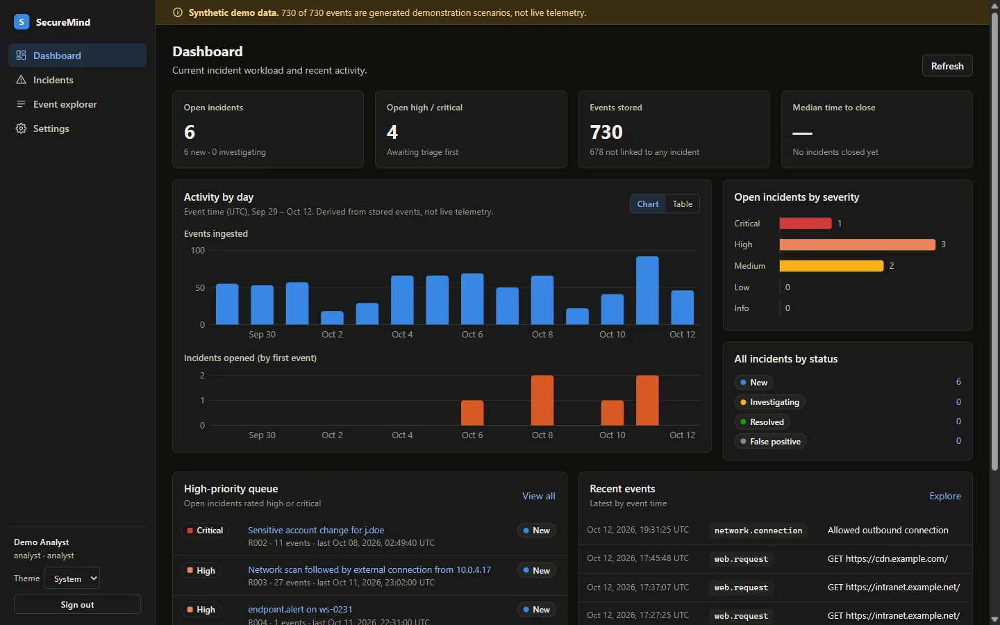

SecureMind
AI-assisted security operations platform
A working platform for triaging security events. It validates and normalizes incoming events, correlates them into incidents with deterministic rules, and generates investigation reports that are discarded unless every statement cites the evidence behind it.
- Status Local MVP (v0.1), synthetic data
- Stack TypeScript, Fastify, React, SQLite
- Verified 175 automated tests passing
- Security RBAC, CSRF and CSP controls, rate limits, append-only audit log
